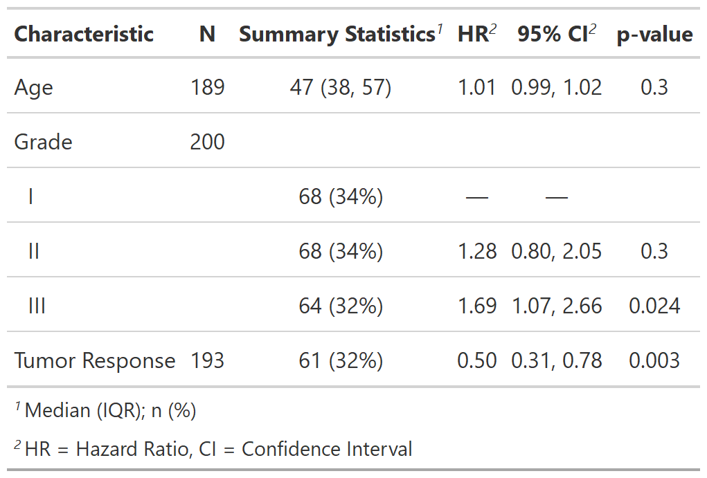

| tbl_merge {gtsummary} | R Documentation |
Merges two or more tbl_regression, tbl_uvregression, tbl_stack,
tbl_summary, or tbl_svysummary objects and adds appropriate spanning headers.
tbl_merge(tbls, tab_spanner = NULL)
tbls |
List of gtsummary objects to merge |
tab_spanner |
Character vector specifying the spanning headers.
Must be the same length as |
A tbl_merge object
Example 1
Example 2

Daniel D. Sjoberg
Other tbl_regression tools:
add_global_p(),
add_q(),
bold_italicize_labels_levels,
combine_terms(),
inline_text.tbl_regression(),
modify,
tbl_regression(),
tbl_stack()
Other tbl_uvregression tools:
add_global_p(),
add_q(),
bold_italicize_labels_levels,
inline_text.tbl_uvregression(),
modify,
tbl_stack(),
tbl_uvregression()
Other tbl_summary tools:
add_ci(),
add_n.tbl_summary(),
add_overall(),
add_p.tbl_summary(),
add_q(),
add_stat_label(),
bold_italicize_labels_levels,
inline_text.tbl_summary(),
inline_text.tbl_survfit(),
modify,
tbl_stack(),
tbl_summary()
Other tbl_survfit tools:
add_n.tbl_survfit(),
add_nevent.tbl_survfit(),
add_p.tbl_survfit(),
modify,
tbl_stack(),
tbl_survfit()
Other tbl_svysummary tools:
add_n.tbl_summary(),
add_overall(),
add_p.tbl_svysummary(),
add_q(),
add_stat_label(),
modify,
tbl_stack(),
tbl_svysummary()
# Example 1 ----------------------------------
# Side-by-side Regression Models
library(survival)
t1 <-
glm(response ~ trt + grade + age, trial, family = binomial) %>%
tbl_regression(exponentiate = TRUE)
t2 <-
coxph(Surv(ttdeath, death) ~ trt + grade + age, trial) %>%
tbl_regression(exponentiate = TRUE)
tbl_merge_ex1 <-
tbl_merge(
tbls = list(t1, t2),
tab_spanner = c("**Tumor Response**", "**Time to Death**")
)
# Example 2 ----------------------------------
# Descriptive statistics alongside univariate regression, with no spanning header
t3 <-
trial[c("age", "grade", "response")] %>%
tbl_summary(missing = "no") %>%
add_n() %>%
modify_header(stat_0 ~ "**Summary Statistics**")
t4 <-
tbl_uvregression(
trial[c("ttdeath", "death", "age", "grade", "response")],
method = coxph,
y = Surv(ttdeath, death),
exponentiate = TRUE,
hide_n = TRUE
)
tbl_merge_ex2 <-
tbl_merge(tbls = list(t3, t4)) %>%
modify_spanning_header(everything() ~ NA_character_)